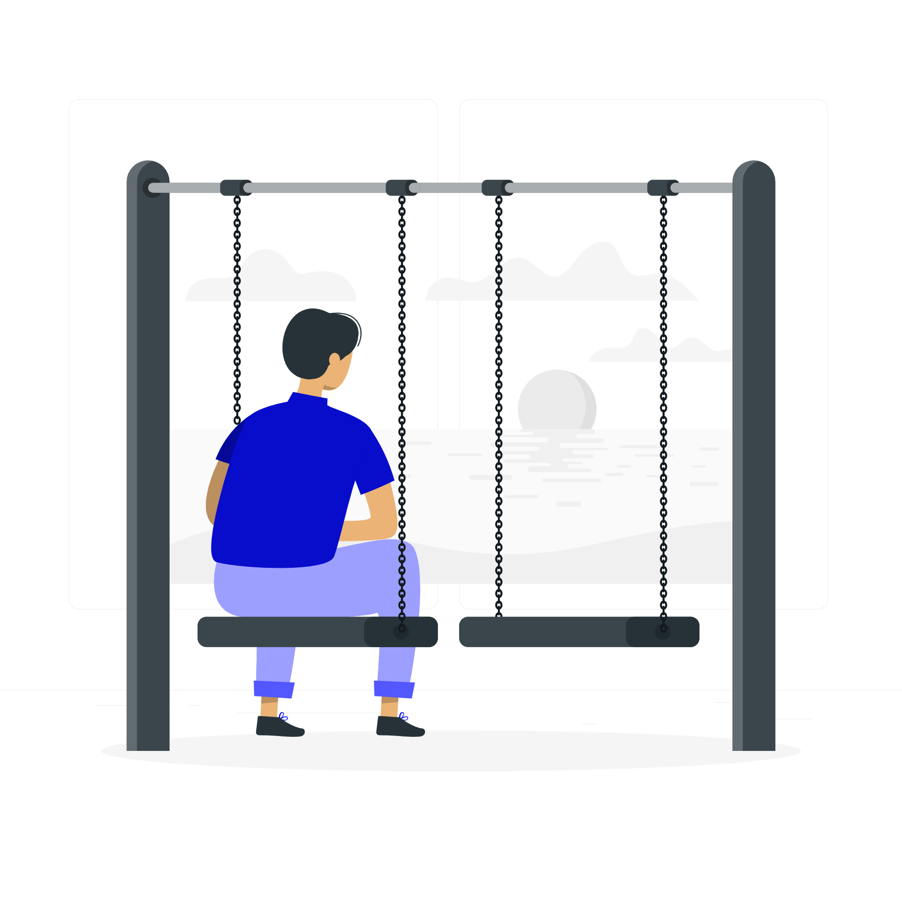

سردرگم، بدون نقشه راه

گرفتار موانع روانی و درونی

تنها، بدون حمایت و کمک
اما از کجا معلوم، فلوئنت هم مانند بقیه مدعیان نباشد؟

این سناریوی تکراری میلیونها ایرانی در چند دهه اخیر است
“ما ادعایی نداریم فقط از بهترینهای دنیا استفاده میکنیم”
ما در ۷ سال گذشته، یک راهکار جامع برای تسلط بر زبان را آماده کردهایم. پازلی از قطعاتی مانند موارد زیر:
منابع ویژه دانشگاه کمبریج

به گفته خود کمبریج، فلوئنت اولین و تنها مرجعی در ایران است که به برخی منابع پولی و جدید دانشگاه کمبریج (بر اساس تحقیقات ۲۰ سال اخیرشان) دسترسی دارد.
تنها بومی سازی متد Fluent در ایران
ما تنها نماینده فلوئنت فوراور هستیم؛ روشی که تحسین بسیاری از متخصصین را برانگیخت با میلیونها زبان آموز. به جز این ما تمام منابع پولی آن را از سال ۲۰۱۴ تا الان تهیه و در فلوئنت به کار گرفته ایم.
محققین دانشگاه آلبرتا ویکتوریا

ما روش مدرن و پیشرفته تیم النکا از دانشگاه آلبرتا و طراح مدارس کانادا، اکراین و ... و دکتر نیشن استاد به نام از دانشگاه ویکتوریا را پس از سالها بررسی و استفاده، در فلوئنت به کار گرفته
ما در فلوئنت، به سه روش، طی کردن این راه را برای شما ساده کردهایم

هموار کردن راه با نقشه راه کامل، بدون سردرگمی

رهایی رهرو از موانع درونی